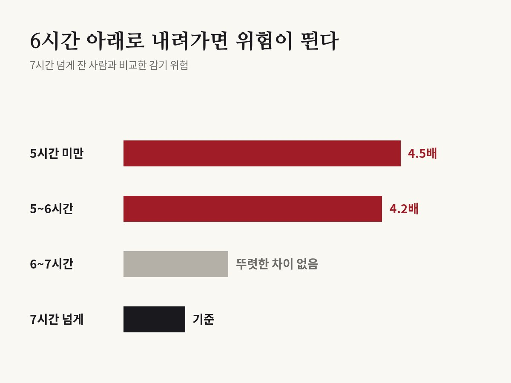

6시간 못 자면 감기에 두 배 가까이 더 걸렸다
Prather, Janicki-Deverts, Hall & Cohen · Sleep, 2015

01결과
잠을 적게 자면 감기에 잘 걸린다는 말, 한 번쯤 들어 봤을 거예요. 미국 캘리포니아대학교 샌프란시스코캠퍼스 등 연구진이 이 말을 실제로 시험해 2015년 학술지 《슬립》에 발표했어요. 건강한 어른 164명의 코에 감기 바이러스를 직접 넣고, 누가 감기에 걸리는지 지켜봤어요.
결과는 뚜렷했어요. 하루 평균 6시간을 못 잔 사람은 7시간 넘게 잔 사람보다 감기에 걸릴 가능성이 4.2배 높았어요. 5시간도 못 잔 사람은 4.5배였어요.
걸린 사람의 비율로 보면 이래요. 나이와 실험 전 항체 수준을 감안해 계산한 값으로, 7시간 넘게 잔 사람은 약 17%, 6~7시간은 약 23%, 5~6시간은 약 30%, 5시간 미만은 약 45%가 감기에 걸렸어요.
6시간에서 7시간 사이로 잔 사람은 7시간 넘게 잔 사람과 뚜렷한 차이가 없었어요. 위험이 크게 뛰는 건 잠이 6시간 아래로 내려갈 때예요.

02어떻게 실험했나
참가자들은 먼저 손목시계처럼 생긴 센서를 일주일 동안 차고 평소대로 생활했어요. 센서는 몸의 움직임으로 실제로 잠든 시간을 쟀어요. '몇 시간 잤다'고 스스로 적는 것보다 정확한 방법이에요.
그 다음 모두 호텔에 들어갔어요. 바깥에서 다른 감기에 옮지 않게 막은 거예요. 첫날 검사를 마친 뒤 코에 감기 바이러스가 든 방울을 떨어뜨렸어요.
그 뒤 5일 동안 매일 코를 씻어 낸 물을 받아 바이러스가 몸에 자리를 잡았는지 확인했어요. 콧물 양처럼 눈으로 확인할 수 있는 증상도 쟀어요. 바이러스가 자리 잡고 실제 증상까지 나온 경우만 '감기에 걸렸다'고 셌어요.
164명 중 48명이 감기에 걸렸어요.
03다른 이유는 아니었을까
잠을 적게 자는 사람은 스트레스가 많거나, 담배를 피우거나, 형편이 넉넉하지 않을 수도 있어요. 그렇다면 감기의 진짜 원인은 잠이 아니라 그쪽일 수 있죠.
연구진은 그래서 나이, 성별, 인종, 학력, 소득, 체중, 계절, 스트레스, 성격과 정서, 흡연과 음주 같은 생활 습관까지 함께 따졌어요. 실험 전에 이 바이러스에 맞서는 항체가 몸에 얼마나 있었는지도 쟀어요.
이런 것을 모두 감안해도 수면 시간의 영향은 그대로 남았어요. 여러 요인 가운데 감기를 가장 잘 설명한 게 잠이었어요.
흥미로운 점도 있어요. 밤에 자주 깼는지는 감기와 관계가 없었어요. 중요한 건 하루에 모두 몇 시간을 잤는지였어요.
04왜 그럴까
이 논문은 잠과 면역이 어떻게 이어지는지를 직접 재지는 않았어요. 다만 잠이 부족하면 몸이 병균과 싸우는 힘이 약해진다는 연구는 여럿 있어요. 연구진은 이번 결과가 그런 연구들과 같은 방향이라고 설명해요.
같은 연구팀은 몇 해 전에도 비슷한 실험을 했어요. 그때는 사람들이 스스로 답한 수면 기록을 썼는데, 역시 잠이 짧을수록 감기에 잘 걸렸어요. 이번에는 센서로 잰 실제 잠으로 같은 결론을 다시 확인한 셈이에요.
05앞선 실험은 무엇을 봤나
몇 해 전 실험은 2009년 학술지 《내과학 기록》에 실렸어요. 평균 37세의 건강한 어른 153명이 2주 동안 매일 전화로 전날 밤 몇 시간 잤는지, 그리고 잠자리에 누운 시간 가운데 실제로 잔 시간이 얼마나 되는지를 답했어요. 그 뒤 격리된 곳에서 코에 감기 바이러스를 넣었어요.
하루 7시간을 못 잔 사람은 8시간 이상 잔 사람보다 감기에 걸릴 가능성이 2.94배 높았어요.
더 큰 차이는 잠의 질에서 나왔어요. 누워 있던 시간의 92%도 못 잔 사람은 98% 이상 잔 사람보다 5.5배 더 많이 걸렸어요. 2015년 연구에서 밤에 깬 횟수가 상관없었던 것과는 다른 결과예요. 잠의 질을 재는 방법이 달랐던 만큼, 잠의 질이 얼마나 중요한지는 더 확인이 필요해요.
06나와 무슨 상관일까
미국 수면 학회들은 어른에게 하루 7시간 이상 자라고 권해요. 이번 결과도 그 기준과 잘 맞아요.
이 연구에서 잰 건 하룻밤이 아니라 평소 일주일의 평균이에요. 하루 늦게 잤다고 걱정할 일은 아니에요. 짧은 잠이 매일 이어지는 생활이 문제라는 뜻이에요.
감기가 돌기 시작하면 손 씻기만큼 잠도 챙길 만해요. 새벽까지 휴대폰을 보는 습관에는 생각보다 큰 대가가 따를 수 있어요.
07읽을 때 주의할 점
잠을 일부러 줄이게 한 실험이 아니에요. 평소 잠을 잰 거라서 잠이 원인이라고 딱 잘라 말할 수는 없어요. 연구진도 논문에 이 점을 적었어요.
감기를 일으키는 바이러스는 200가지가 넘는데 이 실험은 그중 한 가지만 썼어요. 다른 감기나 독감에서도 똑같을지는 더 확인해야 해요.
4.2배는 여러 조건을 감안해 걸릴 가능성을 견준 통계 값이에요. 걸린 사람의 비율이 4.2배라는 뜻은 아니에요. 비율로 보면 7시간 넘게 잔 사람은 6명 중 1명꼴, 5~6시간 잔 사람은 10명 중 3명꼴로 걸렸어요. 6시간을 못 잔 사람이 모두 감기에 걸린 것도 아니에요.
바로잡습니다
- 제목을 '7시간 이상 안 자면 감기에 4.2배 더 걸린다'에서 '6시간 못 자면 감기에 4.2배 더 걸렸다'로 바로잡았습니다. 4.2배는 6시간 못 잔 사람과 7시간 넘게 잔 사람을 비교한 값이고, 6~7시간 잔 사람은 7시간 넘게 잔 사람과 뚜렷한 차이가 없었습니다.
- 제목을 '6시간 못 자면 감기에 4.2배 더 걸렸다'에서 '6시간 못 자면 감기에 두 배 가까이 더 걸렸다'로 고쳤습니다. 4.2배는 여러 조건을 감안해 걸릴 가능성을 견준 통계 값(오즈비)이라, 걸린 사람이 4.2배 많았다는 뜻으로 읽힐 수 있었습니다. 걸린 비율은 5~6시간 잔 사람 약 30%, 7시간 넘게 잔 사람 약 17%였습니다.
원 논문
- Prather, Janicki-Deverts, Hall & Cohen (2015), Sleep 38(9), doi:10.5665/sleep.4968
- doi.org/10.5665/sleep.4968